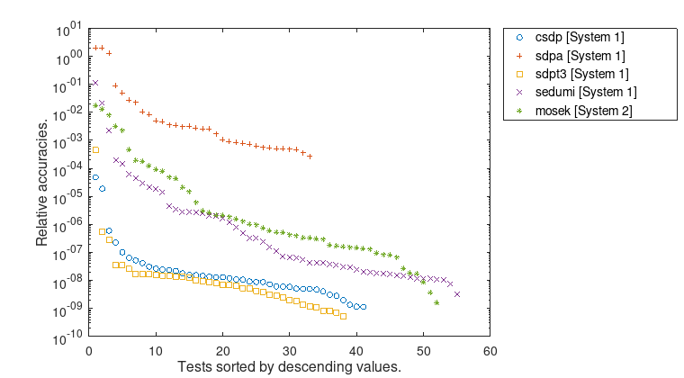
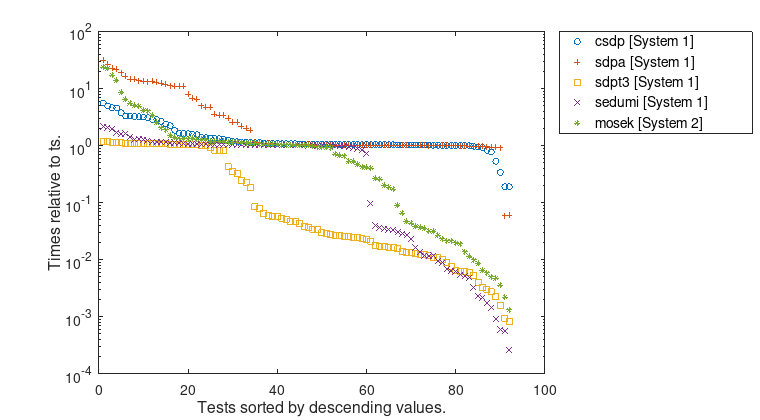
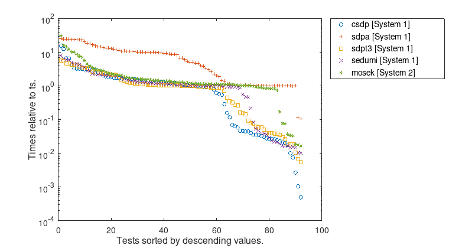
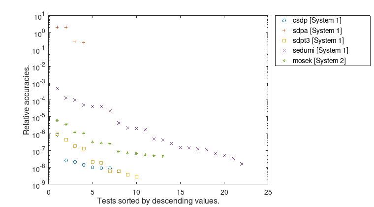
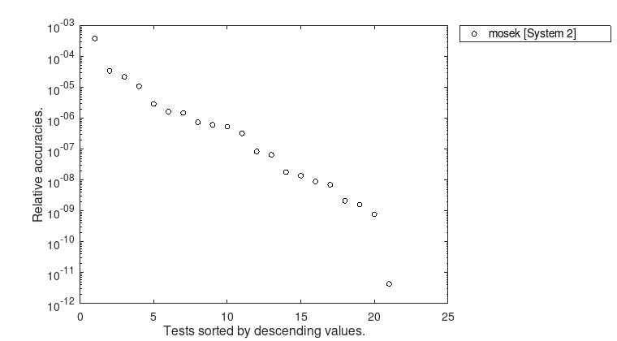
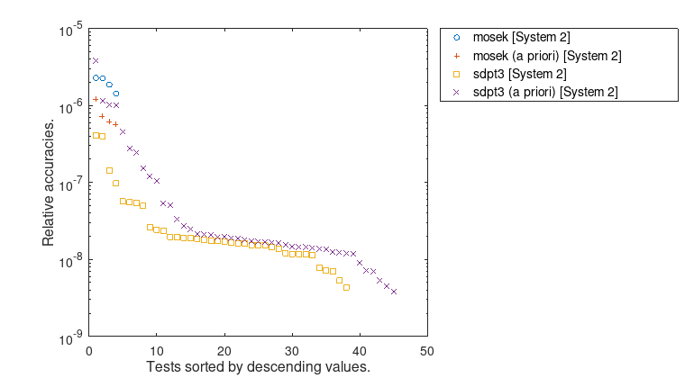

Numerical Results¶
In this section, we present statistics for the numerical results obtained by VSDP for conic programming problems. The tests were performed using approximations computed by the conic solvers: CSDP, MOSEK, SDPA, SDPT3, and SeDuMi. For second-order cone programming problems only MOSEK, SDPT3, and SeDuMi were used. The solvers have been called with their default parameters. Almost all of the problems that could not be solved with a guaranteed accuracy of about \(10^{-7}\) are known to be ill-posed (cf. [Ordonez2003]).
In particular, the results were obtained by using the following two systems:
System 1
GNU Octave (4.4.1)
CPU: Intel(R) Xeon(R) E3-1220 (4 cores)
RAM: 12 GB
OS: Linux (openSUSE 15.0)
Interval arithmetic: INTLAB 11
Conic Solver: CSDP (6.2.0), SDPA (7.3.8), SDPT3 (4.0), SeDuMi (1.32)
System 2
MATLAB(R) (R2018b)
CPU: Intel(R) Xeon(R) E5-2640v3 (8 cores)
RAM: 128 GB
OS: Linux (Ubuntu 18.04)
Interval arithmetic: INTLAB 11
Conic Solver: MOSEK (8.1.0.62), SDPT3 (4.0)
The relative accuracy of two numbers is measured by \($ \mu(a,b) := \dfrac{a-b}{\max\{1.0, (|a|+|b|)/2\}}. $\)
Notice that we do not use the absolute value of \(a - b\). Hence, a negative sign implies that \(a < b\).
SDPLIB¶
In the following, we describe the numerical results for 92 problems from the SDPLIB suite of Borchers [Borchers1999]. In [Freund2007] it is shown that four problems are infeasible and 32 problems are ill-posed.
VSDP could compute rigorous bounds of the optimal values for all feasible well-posed problems and verify the existence of strictly primal and dual feasible solutions. Hence, strong duality is proved. For the 32 ill-posed problems VSDP has computed the upper bound \(\overline{f_{d}} = \text{Inf}\), which reflects the fact that the distance to the next primal infeasible problem is zero. For the four infeasible problems VSDP could compute rigorous certificates of infeasibility. Detailed numerical results can be found in the tables for System 1 and System 2, where the computed rigorous upper bound \(\overline{f_{d}}\), the rigorous lower bound \(\underline{f_{p}}\), and the rigorous error bound \(\mu(\overline{f_{d}},\underline{f_{p}})\) are displayed. We have set \(\mu(\overline{f_{d}},\underline{f_{p}}) = \text{NaN}\) if the upper or the lower bound is infinite. Both tables also contain running times in seconds, where \(t_{s}\) is the time for computing the approximations and \(\overline{t}\) and \(\underline{t}\) are the times for computing the upper and the lower rigorous error bounds, respectively.
Some major characteristics the numerical results for the SDPLIB are summarized by the following figures.

Figure 1: Relative accuracies \(\mu(\overline{f_{d}},\underline{f_{p}})\). Only results for which both rigorous error bounds were computed are taken into account. With the exception of SDPA, all approximate conic solvers can compute rigorous error bounds with 7 or 8 significant decimal digits.

Figure 2: Computation times for \(\underline{t}\) relative to \(t_{s}\).

Figure 3: Computation times for \(\overline{t}\) relative to \(t_{s}\).
Furthermore, the figures show, that the error bounds as well as the time ratios depend significantly on the used conic solver. Even the largest problem MaxG60 with about 24 million variables and 7000 constraints can be solved rigorously by VSDP with high accuracy and in a reasonable time.
SPARSE_SDP¶
In this section a statistic of the numerical results for problems from structural and topological optimization is presented. Structural and especially free material optimization gained more and more interest in the recent years. The most prominent example is the design of ribs in the leading edge of the Airbus A380. We performed tests on problems from the test library collected by Kočvara. This is a collection of 26 sparse semidefinite programming problems. More details on these problems can be found in [Ben-Tal2000], [Kocvara2002], and [Zowe1997]. For 22 problems out of this collection VSDP could compute a rigorous primal and dual \(\varepsilon\)-optimal solution, using SeDuMi as approximate solver. The largest problem that was rigorously solved by VSDP is shmup5. This problem has 1800 equality constraints and 13 million variables.
Detailed results can be found in the tables for System 1 and System 2. A statistic of these numerical experiments is given in the following figures.

Figure 4: Relative accuracies \(\mu(\overline{f_{d}},\underline{f_{p}})\). Only results for which both rigorous error bounds were computed are taken into account.
Figure 5: Computation times for \(\underline{t}\) relative to \(t_{s}\).

Figure 6: Computation times for \(\overline{t}\) relative to \(t_{s}\).

DIMACS¶
We present some statistics of numerical results for the DIMACS test library of semidefinte-quadratic-linear programs. This library was assembled for the purposes of the 7-th DIMACS Implementation Challenge. There are 47 challenging problems that are divided into 12 groups. For details see [Pataki2002]. In each group there are about five instances, from routinely solvable ones to those at or beyond the capabilities of current solvers. Due to the large problem sizes this test library was only run on System 2 using MOSEK and the problem fap25 had to be omitted in our test.
One of the largest problems which could be solved by VSDP is the problem torusg3-15, with 3375 equality constraints and about 5 million variables.
Detailed results can be found in the table for System 2. A statistic of these numerical experiments is given in the following figures.

Figure 7: Relative accuracies \(\mu(\overline{f_{d}},\underline{f_{p}})\). Only results for which both rigorous error bounds were computed are taken into account.
Figure 8: Computation times for \(\underline{t}\) relative to \(t_{s}\).

Figure 9: Computation times for \(\overline{t}\) relative to \(t_{s}\).

ESC¶
The ESC library contains 47 semidefinite programs from electronic structure calculations in quantum chemistry. In particular, the semidefinite programs are a relaxation of a variational approach for computing the ground state energy of \(N\)-electron molecules. For more details see [Zhao2004]. The size of the resulting problems ranges between 100,000 and 2 million variables, and between 948 and 7230 constraints.
Approximate solutions and rigorous bounds were obtained for all problem instances, with the exception of the test problem CF, where the problem data is inconsistent.
Detailed results can be found in the table for System 2. All energy values are given in Hartree units and are the negative computed values plus the nuclear repulsion energy, see [Zhao2004] for details.
In the table, the rigorous upper and lower error bounds of the optimal value are denoted by \(\overline{E}\), \(\underline{E}\), and \(\underline{E}_{2}\), respectively. The value \(\underline{E}_{2}\) is the rigorous lower energy error bound calculated by using our a priori eigenvalue bounds as derived in [Chaykin2016]. The quantities \(\tilde{t}\), \(\overline{t}\), \(\underline{t}\), and \(\underline{t}_2\) denote the running times in seconds for \(E_{p}\) and \(E_{d}\), \(\overline{E}\), \(\underline{E}\), and \(\underline{E}_{2}\), respectively.
A statistic of these numerical experiments is given in the following figures.

Figure 10: Relative accuracies \(\mu(\overline{f_{d}},\underline{f_{p}})\). Only results for which both rigorous error bounds were computed are taken into account.
Figure 11: Computation times for \(\underline{t}\) relative to \(t_{s}\).

Figure 12: Computation times for \(\overline{t}\) relative to \(t_{s}\).

RDM¶
The RDM library [Nakata2008] contains eight additional and larger problem instances, compared to the ESC benchmark library. The size of the resulting semidefinite problems ranges between 2 million and 19 million variables, and between 7230 and 27888 constraints.
Using the same notation as for the ESC table, the detailed results can be found for System 2.